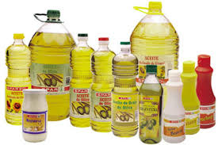

Tipos de reciclaje
Reciclaje del papel
 Grandes cantidades de papel usado pueden ponerse en remojo para fabricar pulpa de celulosa y fabricar papel de inferior calidad, que pueda volver a utilizarse.
Grandes cantidades de papel usado pueden ponerse en remojo para fabricar pulpa de celulosa y fabricar papel de inferior calidad, que pueda volver a utilizarse.
Reciclaje de metales
Productos metálicos cotidianos elaborados a partir de aluminio, cobre y otros metales blandos, pueden fundirse y volver a aprovecharse para elaborar nuevos productos, disminuyendo la necesidad de comprar materia prima.
Reciclaje de envases plásticos
Los tetra-bricks y otros envases plásticos enteros pueden volver a ser empleados, una vez que hayan sido higienizados correctamente y dispuestos para volver a contener alimentos o jugos.
Reciclaje de aceites
 El aceite de cocinar es un potente contaminante del agua, que puede recogerse y emplearse mediante procesos de filtrado y purificación, como lubricante de maquinaria.
Composting
Los desechos orgánicos como los sobrantes de comida en descomposición, pueden convertirse en abono para la siembra o incluso en insumos para la obtención de biocombustibles.